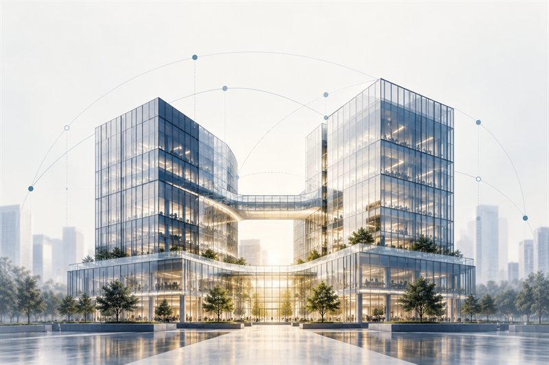

Depth matters more than ever.
In a world where answers are increasingly easy to generate, we go deeper to shape the decisions that move industries forward.
Industries
Deep expertise across four evolving sectors.
Stonewater Partners works with leadership teams globally on complex strategic and operating questions.

Digital Infrastructure
The processes that carry a site from a customer's order to revenue — designed, owned, instrumented and measured.
Explore
Digital Payments
Envision, test, develop and implement innovative products in a rapidly-changing payments environment.
Explore
Digital Platforms
Connect consumers and providers by leveraging the collective power of an increasingly digital workforce.
Explore
Digital Health
Advise, ideate, develop and implement innovative products, strategies and business models in a rapidly-changing healthcare landscape.
ExploreIn their words
What our clients say.
Insights
Perspectives drawn from the work itself.

Mergers & Acquisitions
The Structured Approach to Post-Merger Integration
A time-tested framework for planning and executing post-merger integration, across six functional steps.
Digital Infrastructure
The Definitive Method for Standardizing Telecom Infrastructure Processes
The Sell–Design–Build–Operate framework, and the roadmap to operational excellence it produces.

Digital Infrastructure
The Factory Model for Passive Telecom Infrastructure
Tower companies under pressure to scale will struggle with organizational bottlenecks unless they adopt a simple, powerful operating model.
Our offices
New York
800 3rd Ave, Suite 2800
London
Berkeley Square House
Kuala Lumpur
Q Sentral, KL Sentral